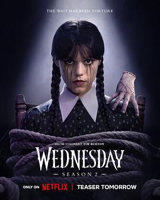

8.4
星期三 第二季
Wednesday Season 2
2025
美国
评分 8.4
导演:
蒂姆·波顿
演员:
詹娜·奥尔特加 / 艾玛·迈尔斯 / 乔伊·桑迪 / 亨特·杜汉 / 维克多·多洛班图 / 穆萨·穆斯塔法 / 乔基·法默
类型:
喜剧,奇幻,悬疑,犯罪
剧情简介
当标志性的冷面少女 Wednesday Addams（詹娜·奥尔特加 饰）踏回哥特风格的 Nevermore Academy，她像一枚黑色中子子弹，静静游走在学院幽暗的大厅和迷雾般的林间小径。新学年开始，校园一区变成了离奇怪状的集合体：她的家人搬来当常驻老师，小学弟＜Pugsley Addams＞也开始上学，昔日敌人与新敌人同时潜伏。Wednesday 用她那双带着讥讽的眼睛观察：父母的蓝色礼服变成了校园标志，一旁是那只静悄悄攥着剪刀脚的 Thing；好友 Enid （艾玛·迈尔斯 饰）从彩虹狼人蜕变，学会在暗处吼叫；而 Bianca （乔伊·桑迪 饰）和 Eugene （穆萨·穆斯塔法 饰）也被卷入一连串怪事。一个神秘的乌鸦标志、被囚禁的「LOIS 计划」、一连串怪案牵扯出学院深处冰封的秘密。Wednesday 的「第六感」出问题，她不得不退回传统侦探套路——蹲伏影子里、窃听脚步声、剪断布景后的暗道。导演蒂姆·波顿用镜头冻结一瞬：钟楼上的腐烂鸦群、校长办公室的血红窗帘、深夜图书馆里书页自翻的声音。本季不仅是解谜，更是家人重组的战争。Wednesday 对母亲 Morticia （凯瑟琳·泽塔-琼斯 饰）一路冷嘲，却也被迫成为校内最炫明面；而 Gomez （路易斯·古兹曼 饰）则在暗处守护。每一次冷笑背后，都是血缘的震颤。节奏在古怪与幽默里摇摆：当Wednesday 在食堂抛下一句「我只喝黑咖啡」时，身后的天花板掉下一只骷髅头。这一季最大的亮点在于：原来世界比「怪异学院」还更怪异。超自然元素翻新，“血色剪影”替代了传统午夜恐怖。你能看到星期三的嘴角轻扬，而她的心里仍在思考：如果我停止嘲讽，谁来嘲讽世界？在她的缄默里，一场关于归属、力量与怪异身份的大战正在上演。